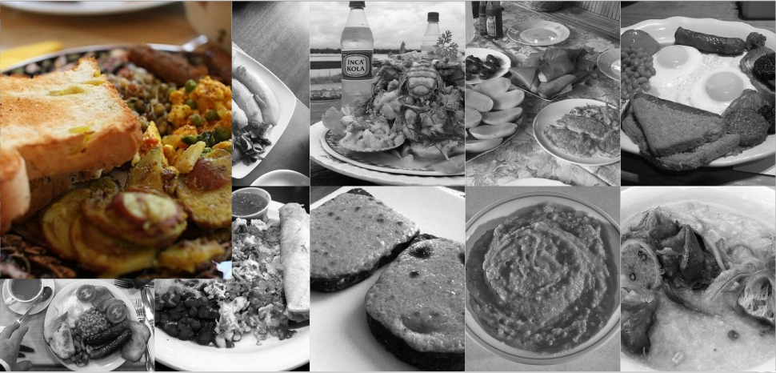
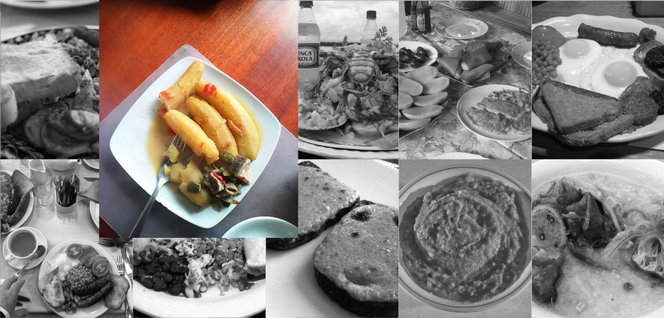
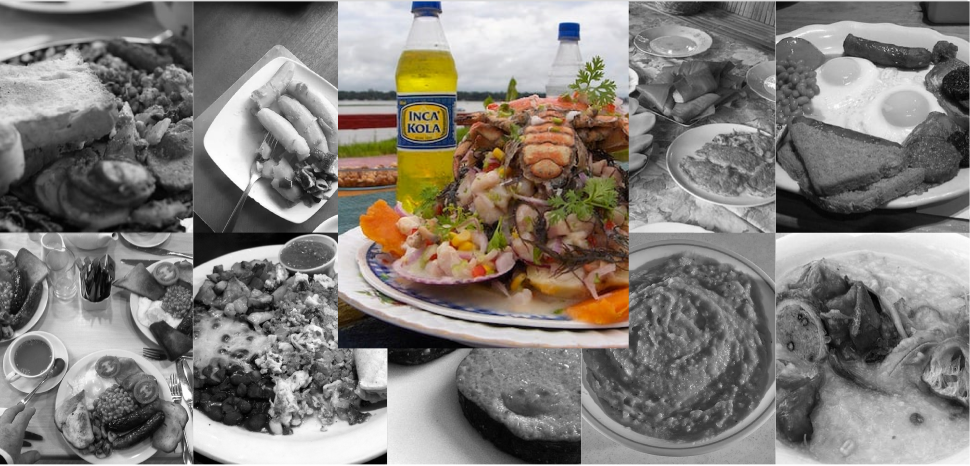
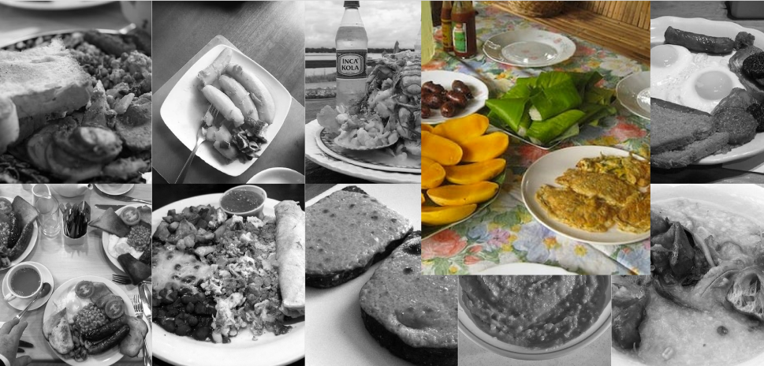
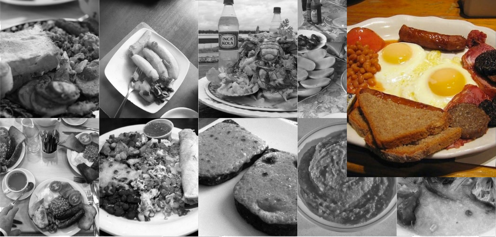
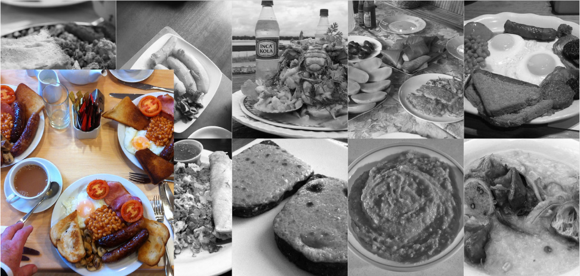
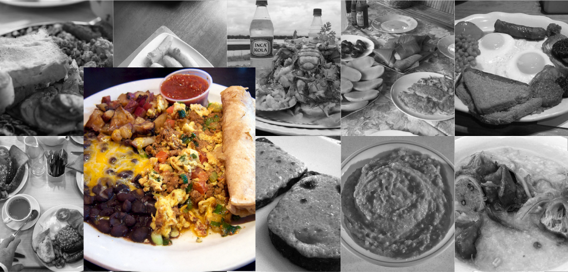
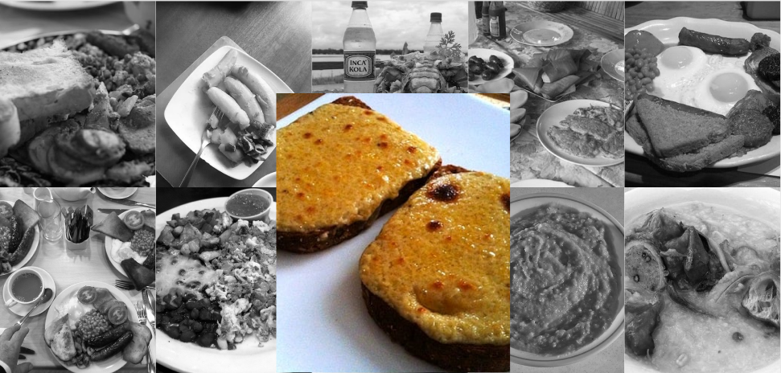
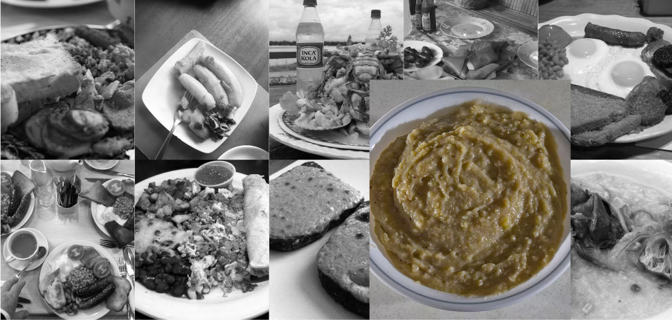
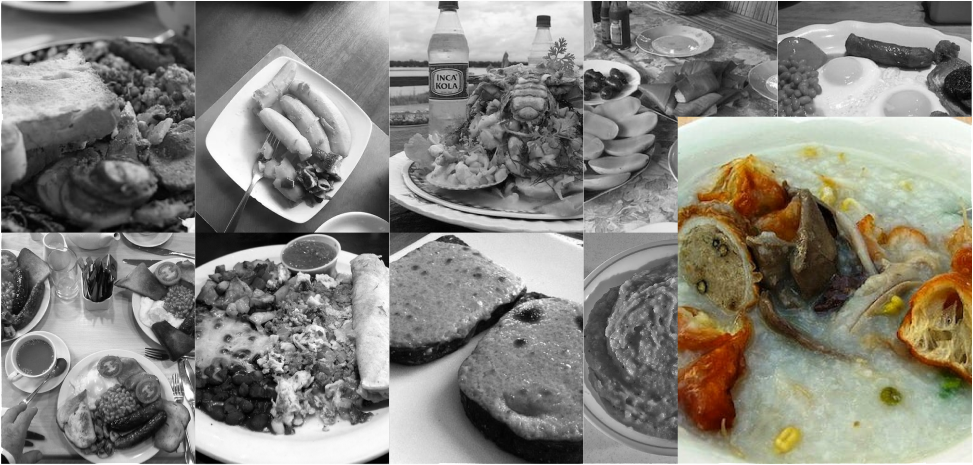

Vi siete mai chiesti se la colazione all’estero sia uguale o diversa dalla vostra solita? La risposta è: sono tutte completamente diverse. Tuttavia, alcune sono veramente strambe e mi verrebbe il voltastomaco solo a pensarci. Ecco, quindi, la mia top 10 delle colazioni più brutte del mondo!
10° posto: India
Patate arrosto con rosmarino, tofu, lenticchie, e puri bhaji, ossia, pane fritto servito con patate all’aglio. Non mi sognerei mai di mangiare una cosa simile a colazione, ma fidatevi, è quella meno peggiore.
9° posto: Uganda
Katogo, un piatto a base di banane verdi e carne stufata con salse a base di verdure. La ricetta perfetta su come non fare una colazione da parte degli ugandesi. Molto gentile da parte loro, così possiamo astenerci da certe cose. Diciamo grazie agli ugandesi.
8° posto: Perù
Ceviche, piatto con frutti di mare crudi e marinati nel limone, uniti a spezie piccanti tipo peperoncino e coriandolo. Ci sono così tante cose che sembra un secondo piatto di un ristorante gourmet e, personalmente, io la cucina gourmet la evito come la peste.
7° posto: Filippine
Mango, riso e delle minuscole salsicce chiamate longganisa, che una volta fritte con sale e spicchi d’aglio prendono il nome di sinangag, unite poi alle uova, la carne e i fagioli. Sembra la cena di mio nonno.
6° posto: Irlanda
Pane di soda, white pudding, fagioli, salsicce, bacon, uova e funghi. Con “pochi” ingredienti, l’Irlanda ci regala un tutorial su come creare un ambiente “profumato” ovunque ti trovi, ma penso che l’ambiente preferito in cui cospargere questa magnifica aroma sia il bagno. Non chiedetemi perché, voi sapete già.
5° posto: Inghilterra
Uguale a quella irlandese, a differenza del toast al posto del pane e black pudding al posto del white pudding. Non so quale colazione deriva da quale, se quella inglese da quella irlandese o viceversa. Ad ogni modo, ci vediamo al bagno! Ah no aspetta, è occupato...
4° posto: Messico
Chilaquiles piccanti ricoperte da pomodoro, formaggio fuso e coriandolo, punte di vitello e nachos. Ci sono così tante cose messe insieme che ho l’imbarazzo della scelta su cosa mi faccia più schi...no, non si dice mai che il cibo fa schifo, almeno così dicono, ma avete capito. Non ho parole per descriverla se non orribile, per i miei gusti.
3° posto: Galles
Rarebit, un crostone di Cheddar fuso e spalmato, un formaggio a pasta dura che prende il nome dal villaggio inglese dove si produce. Ma è reale o è una presa per i fondelli (per dirla pulita)? Non ho mai visto una colazione così povera. Di cosa saprà mai del Cheddar fuso per colazione? Onestamente, non sono curioso di scoprirlo.
2° posto: Repubblica Dominicana
Il mangu, il piatto tipico della colazione dominicana. È composto da platani bolliti e schiacciati, mischiati a burro e salame, formaggio oppure uova e tutto accompagnato da cioccolata calda. Non vi dico a cosa mi somiglia per evitare di urtare la vostra sensibilità. Di buono ci vedo solo la cioccolata calda.
1° posto: Vietnam
Una zuppa tipo Porridge inglese, senza avena e mischiata con la carne dei maialini nani vietnamiti. Nel porridge: frattaglie di maiale (cuore, sangue e lembi di stomaco), germogli di fagioli e una macinata di pepe. La descrizione che mi ha fatto più schifo in assoluto. Ma come fanno i vietnamiti?

E voi? Cosa ne pensate di queste colazioni particolari? Vi è piaciuto qualcosa? Se sì, la domanda sorge spontanea: come caspita fa a piacerti qualcosa di queste? Ma d’altronde, come si dice, degustibus.